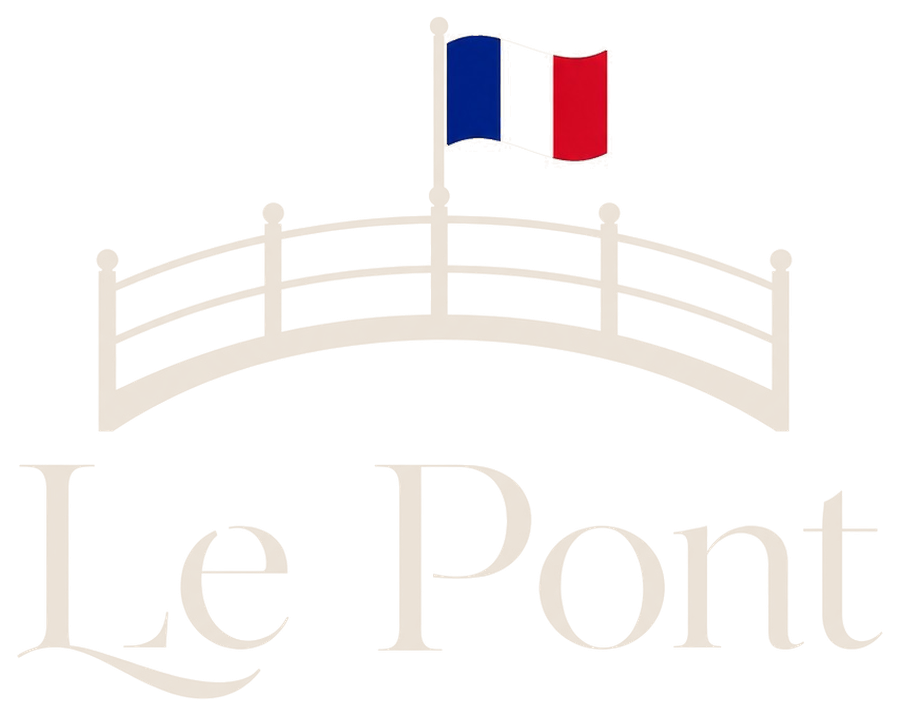
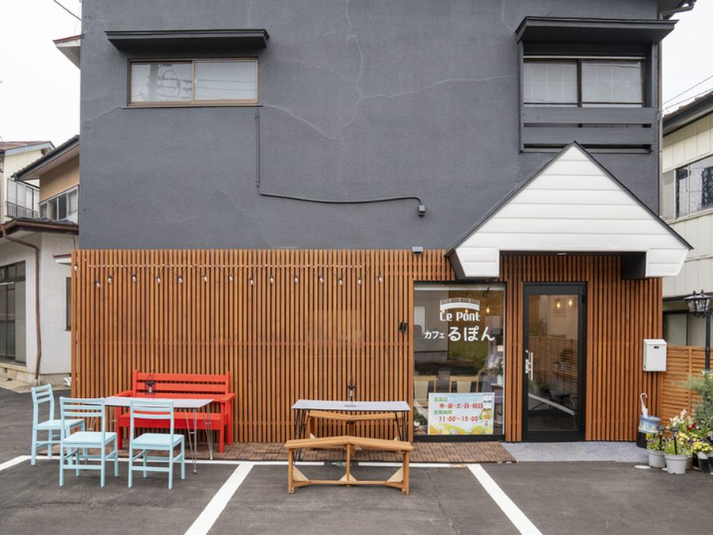
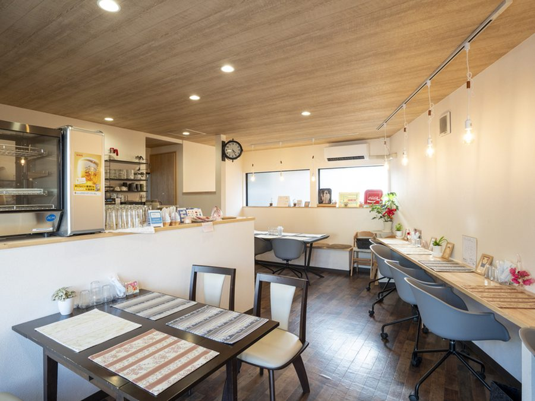
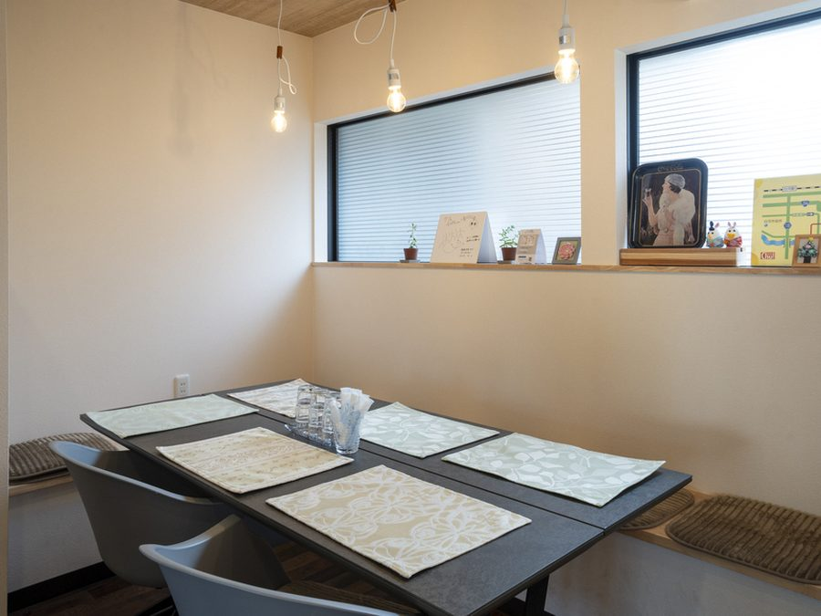
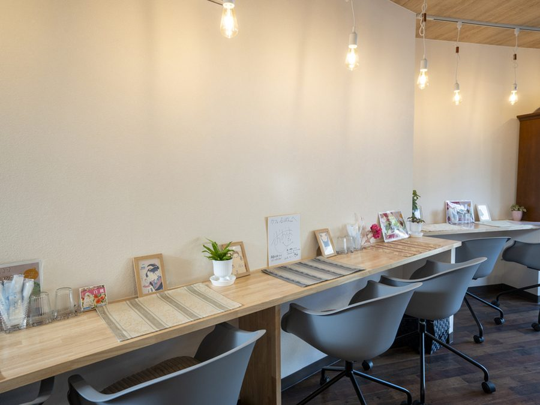
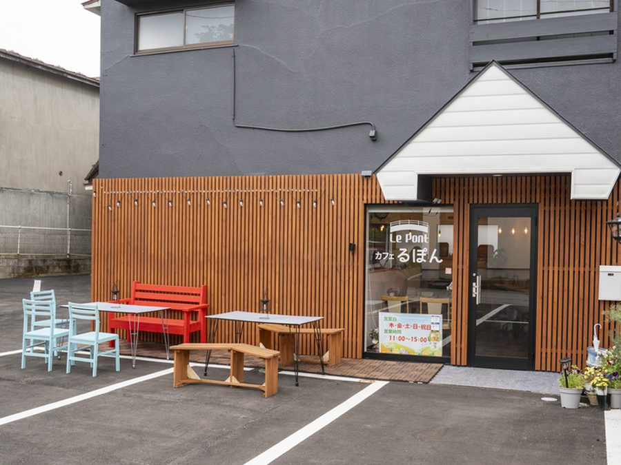

人と人、街と人、食と人をつなぐ
白河の小さなフランスの架け橋

depuis 2024
Un pont entre les gens, les saveurs et le cœur.
人と味と心をつなぐ橋
- 営業
- 木〜日・祝 11:00–15:00
- 定休
- 月・火・水
- 席数
- 18席 / 駐車場8台
- 所在
- 福島県白河市向新蔵50番地
ゆったり流れる時間、おいしいごはん、やさしい会話。
ここは、あなたの“いつもの場所”に。
-

-

-

-

-

Concept
街の架け橋になるカフェ
Le Pont
フランス語で「橋」を意味する le pont。
人と人の架け橋になりたい。その想いから、この店は名づけられました。 福島県白河市に生まれた、小さなフランスのカフェです。
畑と食卓のあいだ。働きたい人と、働く場所のあいだ。 地域に住む人と、訪れる人のあいだ。 わたしたちは、そのあいだに橋を架ける仕事をしています。
蒸籠から立ちのぼる湯気の向こうで、 きょうも誰かと誰かがつながっていく。そんな一日を重ねています。
-
人と人をつなぐ場所
ひとりでも、家族でも。誰かとすれ違い、言葉を交わす場所であること。
-
地元の食材を大切に
白河の畑からまっすぐに。形のふぞろいな野菜も、おいしさはそのままに。
-
ほっとできる時間を提供
急がなくていい時間。湯気とコーヒーの香りに、肩の力がゆるむように。
-
世代や文化をつなぐ架け橋に
年齢も、生まれた場所も違う人が、同じテーブルを囲めるように。
Notre engagement
Le Pont の約束
-
01
地元の恵みを活かした、体にやさしいお料理を。
地元農家から仕入れた野菜を、せいろでゆっくり蒸し上げて。素材そのものの甘みと香りを大切にしています。
-
02
手づくりにこだわり、心を込めてご用意します。
パンもスイーツも自家製。ひとつひとつ、店の厨房から生まれています。
-
03
お一人でも、ご家族でも、安心して過ごせる空間に。
カウンター6席とテーブル12席。車椅子のままご入店いただけます。全席禁煙です。
-
04
地域の笑顔や未来を支える活動を続けていきます。
規格外野菜の活用による食品ロスの削減、そして障がいのある方々とともにつくる厨房。おいしさの先にある役割を果たしていきます。
Information
店舗情報
| 店名 | Café Le Pont（るぽん） |
|---|---|
| 住所 | 福島県白河市向新蔵50番地 |
| 電話 | 090-4256-7353 |
| 営業時間 |
ランチ 木・金・土・日・祝 11:00–15:00 L.O. 料理14:30 / ドリンク14:45 ディナー 木・金・土 17:30–22:00 L.O. 21:30 ／ 夜は予約制です |
| 定休日 | 月曜・火曜・水曜 |
| 席数 | 18席（カウンター6席 / テーブル12席） |
| 貸切 | 可（20名以下）／ 着席18名・立食25名まで |
| 駐車場 | あり（8台） |
|---|---|
| 設備 | 無料Wi-Fi / 電源あり / 車椅子で入店可 |
| 喫煙 | 全席禁煙（店外に喫煙スペースあり） |
| 個室 | なし |
| お支払い |
カード VISA / Master / JCB 電子マネー 交通系（Suica等）/ nanaco / WAON / iD / QUICPay |
| SNS | Instagram @rupon_208 |
Access
アクセス
À bientôt chez Le Pont.
湯気の向こうで、お待ちしています。
夜のお食事、貸切のご相談はお電話にて承ります。
日々のメニューや営業のお知らせは Instagram で発信しています。